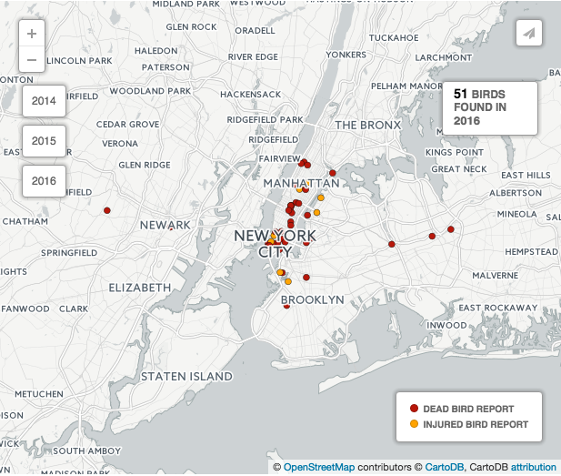
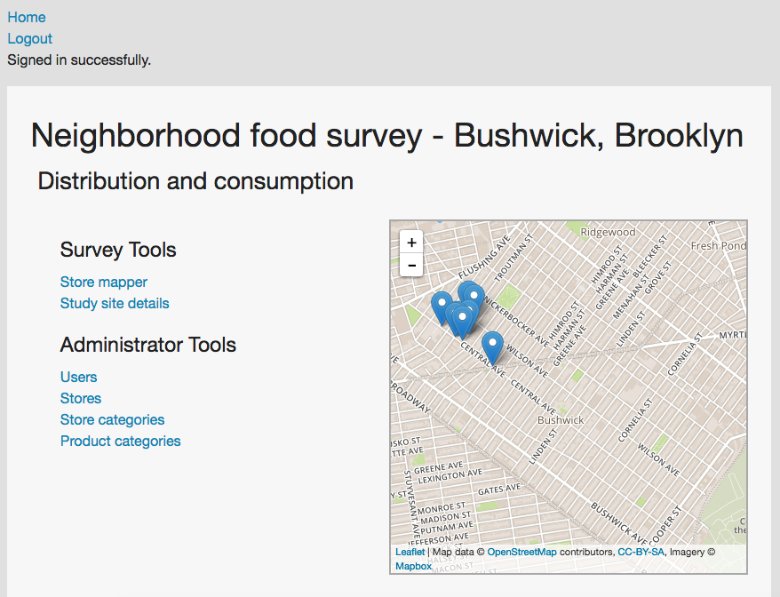
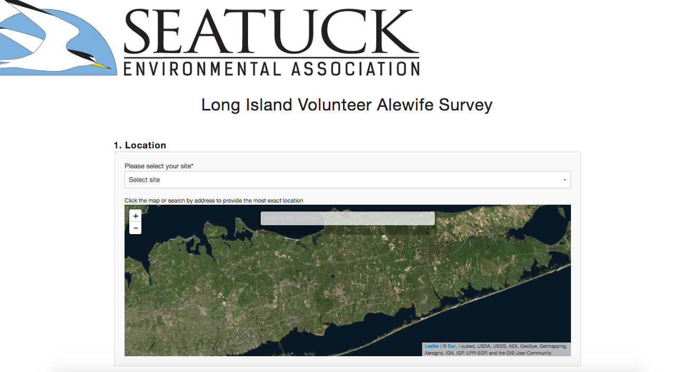

About Me
I am a freelance web developer with a particular passion for creating tools that benefit environmental and social causes. I have worked to develop research and data collection tools for NYC Audubon, Seatuck, Cornell Cooperative Extension, The New School, and the Delaware Riverkeeper Network.
Selected Projects
D-Bird

Concept and website development
D-Bird
Crowdsourced data collection
Client: New York City Audubon Society
Every year, millions of birds are killed by colliding with buildings. D-Bird was created for New York City Audubon to aid in their research and advocacy work by collecting crowdsourced georeferenced bird mortality data.
D-Bird is a fully-responsive mobile and desktop web app, and can be viewed at www.d-bird.org
D-Bird has recently launched in Texas, Minnesota, and Atlanta
×
PSFiST

Concept and website development
Project Safe Flight Survey Tool (PSFiST)
Dynamic field data form
Client: New York City Audubon Society
Created for New York City Audubon's scientific bird mortality study, Project Safe Flight, PSFiST allows project volunteers to record a variable number of records per form submission.
×
GeoStudy

Concept and website development
GeoStudy
Field data collection suite
×
LIVAS

Concept and website development
Long Island Volunteer Alewife Survey (LIVAS)
Field data collection
Client: Seatuck
Created for Seatuck Environmental Association, LIVAS is a fully-responsive mobile and desktop web-app designed to collect volunteer-sourced georeferenced river herring population survey data.
×